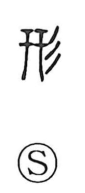

形

Uncategorized
Kun: kata, katachi, nari | On: kei, gyo
shape ・ form ・ figure
Explanation
In early writing, 形 is composed of 井 and 彡. Here 井 does not depict a well but the wooden outer frame of a casting mold—the waku into which molten metal was poured—while 彡 is a sign that evokes beauty in color and outline. Together they first named the handsome, well-proportioned form of objects cast in such molds, and by extension came to denote the shape of things in general and even the figure of a person.